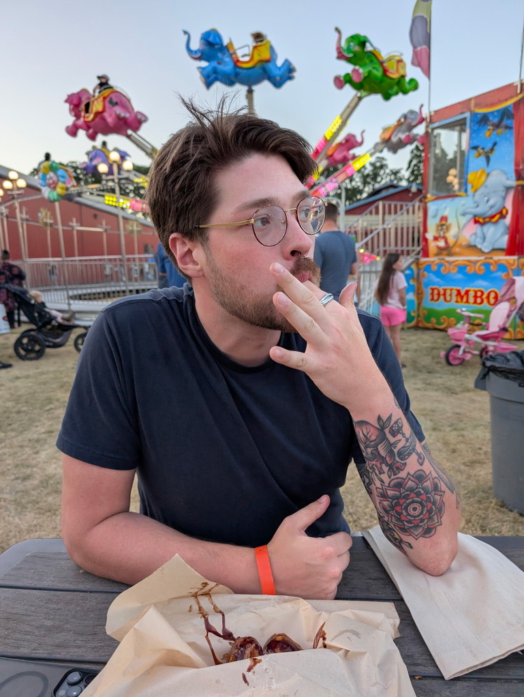

Hi,
I'm Frankie
I’m a PhD student working at the intersection of machine learning, bioinformatics, and healthcare, with a focus on rare diseases. My goal is to build transparent, equitable systems that make advanced care more accessible and affordable.”


About Me
I am a concurrent MSCS &
PhD Student in Artificial Intelligence
I’m finishing my second year as a PhD student at Oregon State University, where I work on machine learning and knowledge graphs for rare disease research and clinical decision support. I’m currently a Graduate Research Assistant in the Ramsey Lab, where I get to work on some exciting projects. You can read more about those below. I’m originally from the Cleveland, Ohio area, and yes, I’m a die-hard Cleveland sports fan and a Buckeye (O-H!). Before grad school, I served as a combat medic in the U.S. Army National Guard and worked in emergency and clinical medicine. That experience made me realize I wanted to impact healthcare at a systems level. During my post-bacc at Oregon State, I discovered I could combine healthcare with programming and problem-solving through computer science, and I haven’t looked back. After graduate school, I hope to continue working in biomedical AI in a research or applied role focused on meaningful, real-world impact. Outside of research, I enjoy cooking, playing with my dog, spending time with friends, and discovering new music.
My Journey
Academic & ProfessionalStarted at University of Cincinnati
Molecular BiologyTransferred to Ohio State
BiologyB.A. in Biology
The Ohio State UniversityStarted Post-Bacc Program
Oregon State University B.S. in Computer ScienceB.S. in Computer Science
Oregon State UniversityStarted Ph.D. in AI
Oregon State UniversityAdded Concurrent M.S. in CS
Oregon State UniversityEnlisted as a Medic (68W)
Ohio Army National GuardPrivate EMS Companies
Paramedic/EMTMedical Assistant
Cleveland ClinicMedic Contractor
FEMAUndergraduate Research Assistant
Oregon State UniversityProject Assistant
Oregon State UniversityGraduate Research Assistant
Ramsey Lab, Oregon State UniversityPublications
F.M. Hodges, et al., “Using AI to Improve Diagnosis and Treatment of Rare Diseases: A Chat Agent for Equitable and Accessible Healthcare,” Artificial Intelligence in Medicine (AIME), LNCS vol. 15735, Springer, 2025. doi:10.1007/978-3-031-95841-0_35
F.M. Hodges, et al., “White Paper on Radiant,” Oregon State University, 2025. radiant.rtx.ai/whitepaper
Presentations
Poster Presentation: Radiant: An Agentic RAG System for Rare Diseases. Presented at Artificial Intelligence in Medicine, Pavia, Italy, 2025.
Demonstrative Presentation: Radiant. Presented at Stanford & Research to the People Rare Disease Hackathon, San Francisco, California, 2024.
My Projects
Radiant
A chat-agent prototype for rare disease knowledge discovery and clinical decision support, integrating retrieval-augmented generation (RAG) with knowledge graph verification.
localBabel
Released a packaged module within stitch-proj responsible for mapping heterogeneous biomedical identifiers and categories into a consistent internal schema. It serves as a local semantic harmonization engine, enabling disparate data sources to interoperate through standardized concept resolution and structured transformations.
RTX Uptime Monitor
Designed and deployed a lightweight uptime monitoring service for RTX endpoints that performs continuous health checks, tracks state transitions, and records latency metrics. Features a real-time dashboard, automated recovery detection, Slack alerting, and structured endpoint build metadata tracking for operational transparency.
PloverDB
Maintainer of PloverDB, a high-performance graph query service powering RTX knowledge providers. Responsible for deployment pipelines, infrastructure reliability, build validation, and performance optimization to ensure stable, scalable biomedical knowledge graph access.
RareTarget
A knowledge graph–driven framework for identifying intermediate molecular targets in rare diseases by modeling relationships between symptoms, genes, and therapeutic pathways. Combines graph analytics and machine learning to prioritize biologically plausible intervention points for downstream experimental validation.
Biomedical Query Graph Extractor
A research pipeline integrating NLP, NLI, and embedding models to translate natural-language biomedical queries into formal graph representations for retrieval and reasoning.
Node Embedder
A Python pipeline that iterates through biomedical knowledge graph nodes, extracts entity descriptions, embeds them into a vector store, and enables semantic search and analytics on biomedical relationships.
RTX-KG2
A large biomedical knowledge graph maintained by the Ramsey Lab. I assist in maintaining, debugging, and improving the knowledge ingestion and reasoning pipelines.
My Resume
You can preview my resume directly below or download a copy for your reference.